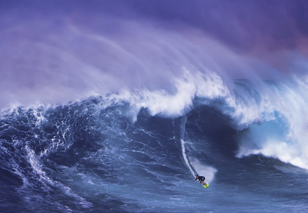

Graphics
Engagement Questions
1. What kind of photos are good to encode using JPEG?
- JPEG is really good to use for real life photos, just like HEIC
2. What kind of photos are good to encode using GIF
- These are really good for cartoon like pictures.
3. What is unique about PNG format?
- PNG files support more colors and it offers better readability compared to JPEG and GIF
4. How do you resize a photo?
- In windows you can use paint and photo, and in mac you can use the preview app
5. Why do you resize a photo?
- So that users that would like to save a photo will not suffer from big files if the photo that was taken has high resolution